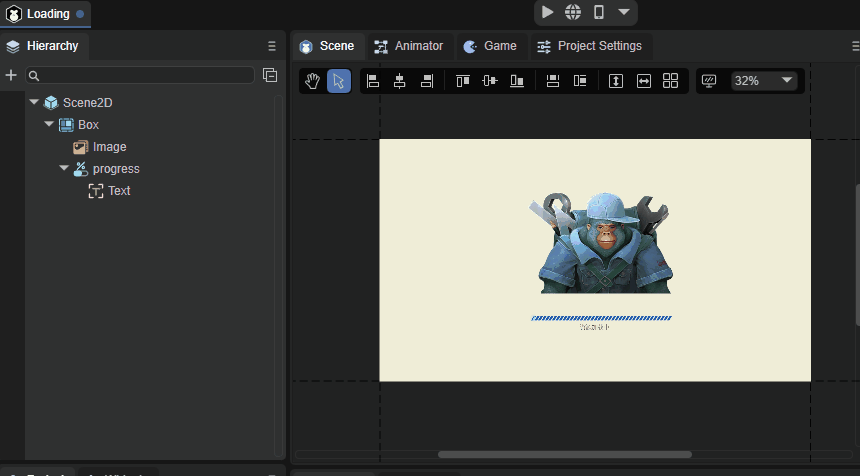

UI编辑器基础交互
1、UI编辑器基础交互图标说明
先来看一下UI编辑器基础交互的图标，如图1-1所示。

（图1-1）
从左至右依次为视窗摄像机模式、平移模式、左对齐、左右居中对齐、右对齐、上对齐、上下居中对齐、下对齐、相同宽度、相同高度、均匀行距、均匀列距、表格排列、显示设置、缩放设置。
2、视窗摄像机模式
在2D场景中点击小手图标即可进入视窗摄像机模式，也可以按住鼠标右键直接进入该模式，在该模式下，持续按住鼠标左键或右键，可以往任意方向拖动整个场景，效果如动图2-1所示。

（动图2-1）
3、平移模式
在2D场景中点击箭头图标即可进入平移模式，在该模式下持续按住鼠标左键即可往任意方向拖动所选中的控件。
如场景层级很多，拖动想要移动的组件会比较困难，这时候就可以从层级面板单击选中该组件然后进行拖动，效果如动图3-1所示。

（动图3-1）
如果想一次性移动多个控件，只需要在画布之外长按鼠标左键然后滑过画布就可以了，如动图3-2所示。

（动图3-2）
4、对齐设置
将控件在该控件的父节点上进行平移，可以只移动一个，也可一次性平移多个，方法为在画布之外长按鼠标左键然后滑过画布，点击自己需要的对齐设置即可。
| 名称 | 功能 | 快捷键 |
|---|---|---|
| 左对齐 | 将所选中的控件以水平方向平移到该控件父节点的最左边。 | Ctrl+Alt+1 |
| 左右居中对齐 | 将所选中的控件以水平方向平移到该控件父节点的水平中心。 | Ctrl+Alt+2 |
| 右对齐 | 将所选中的控件以水平方向平移到该控件父节点的最右边。 | Ctrl+Alt+3 |
| 上对齐 | 将所选中的控件以垂直方向平移到该控件父节点的最上方。 | Ctrl+Alt+4 |
| 上下居中对齐 | 将所选中的控件以垂直方向平移到该控件父节点的垂直中心。 | Ctrl+Alt+5 |
| 下对齐 | 将所选中的控件以垂直方向平移到该控件父节点的最下方。 | Ctrl+Alt+6 |
5、宽高设置
相同宽度（快捷键Ctrl+Alt+7）：以画布作为类比对象，对所选中的控件修改宽度，如动图5-1所示。

（动图5-1）
相同高度（快捷键Ctrl+Alt+8）：以画布作为类比对象，对所选中的控件修改高度，如动图5-2所示。

（动图5-2）
6、行、列距、列数设置
均匀行距：以像素为单位，对所选控件进行均匀的行距排列,效果如动图6-1所示。

（动图6-1）
均匀列距：以像素为单位，对所选控件进行均匀的列距排列,效果如动图6-2所示。

（动图6-2）
表格排列：对所选控件进行整齐的表格式排列，直接输入数值即可完成，非常的方便，效果如动图6-3所示。

（动图6-3）
7、显示设置
显示设置功能可以用来修改编辑器场景视窗的背景颜色，开发者可自行选择，效果如图7-1所示。

（图7-1）
还可以在Design Image中，设置UI编辑时的参考图（根据美术需求设计UI时，放置在场景中的位图，运行时不显示）。参数设置如下：
Source：选择位图作为参考图。
Offset：参考图的位置。
Alpha：参考图的透明度。
In Front：是否位于上层。勾选后，参考图将位于最上层。
8、缩放设置
对当前场景进行缩放，开发者可自行选择。
如图8-1所示。

（图8-1）
缩放设置的快捷键。
| 按键 | 功能 |
|---|---|
| ctrl + + | 放大 |
| ctrl + - | 缩小 |
| ctrl + 1 | 恢复到100% |
| ctrl + 鼠标滚轮 | 自由缩放 |